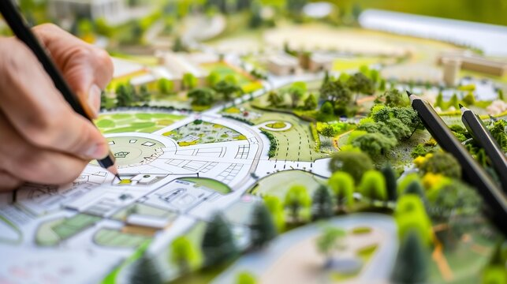

Begin by listening to the site
Before drawing a plan, look closely at the setting: its light, edges, approaches, and existing character.
Read the note
FORM & FIELD / JOURNAL
Field notes on the choices behind thoughtful spaces: reading a site, working with material, and making room for light.
Explore the storiesThe journal
A collection of short reflections on the details and decisions that shape how a space feels.
Before drawing a plan, look closely at the setting: its light, edges, approaches, and existing character.
Read the noteSurface, texture, and the way materials meet can give a restrained design its richness and detail.
Read the noteLight changes through the day. Openings and transitions can make that movement part of the experience.
Read the noteFrom the notebook
Every place has its own conditions. The slope underfoot, the direction of the sun, the shelter of trees, and the way someone arrives all offer clues about what might belong there.
Paying attention before making decisions can lead to architecture that feels connected to its surroundings, rather than simply placed on top of them.
Materials are more than a finish. Their grain, weight, texture, and changing appearance shape how a room is experienced, from a first glance to the feel of a surface in daily use.
When a small group of materials is chosen with care, their contrasts and connections can give a space a quiet, lasting character.
Daylight is never quite still. It shifts in direction and softness, tracing the passage of time across a wall, a floor, or a place to sit.
Thinking about those changes early can help openings, thresholds, and rooms work together to make natural light part of everyday life.